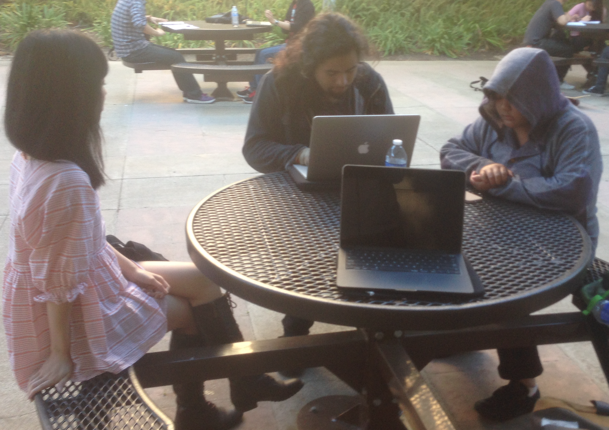
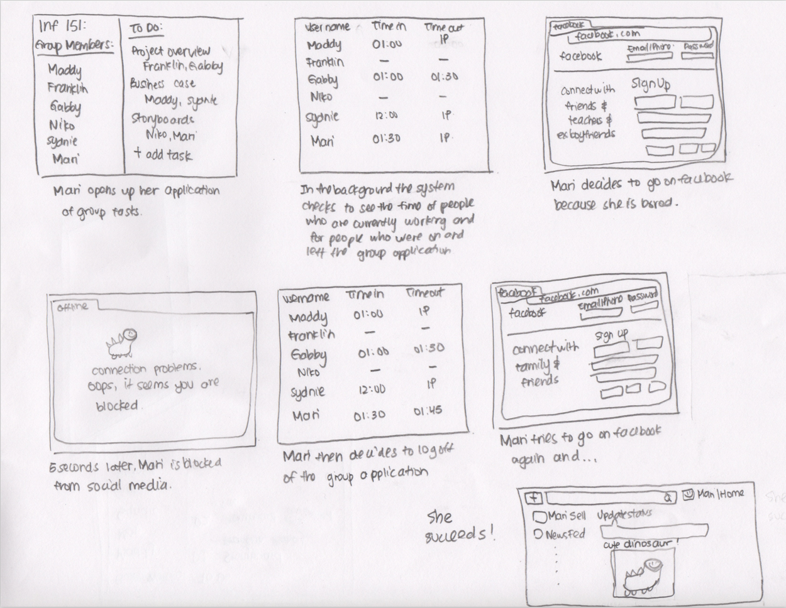
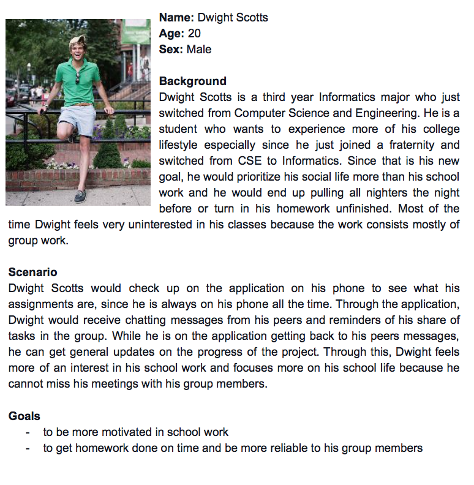

mad's portfolio
Roots |
IntroductionIntroduction In this project, I worked with a team of four other people where our task was to create a prototype that focused on the productivity of group collaboration. This project focused on the “ideation” before creating the prototype of an application. |
* Brainstorming *The data/information/background needed to initially start this application is collected from an affinity diagram activity that we did as a group. Through the affinity diagram we were able to achieve different ideas/opinions/issues and organize them together to figure out the focus of our system and the constraints that comes along with the application. |
 |
|  |
* Storyboarding *After understanding the vision of our project, the next step was to create storyboards of potential usages of the application. The storyboard was able to give my team and I a high-level view of the application itself and gave us an idea of further work that needs to be incorporated. |
* Persona *Once the storyboard was completed, we moved onto creating personas. The personas we created focused on potential stakeholders with different backgrounds in which would enable us to visualize even better the functionalities that the application can provide. |
 |
WireframesOnce getting the full idea of the application, we proceeded onto the next step which was wireframing. The ideas and functionalities that we gathered from the previous steps were implemented into this last stage where we were able to finally visualize the features of the application and include the basic functionalities of the application. |
Results/Conclusions/ReflectionBesides learning many skills from this project, the biggest lesson that I was able to take with me is the importance of the flow of an application from one screen to another screen. The transition from one page to another page needs to be smooth in order for the user to feel comfortable using the system without feeling confused. |